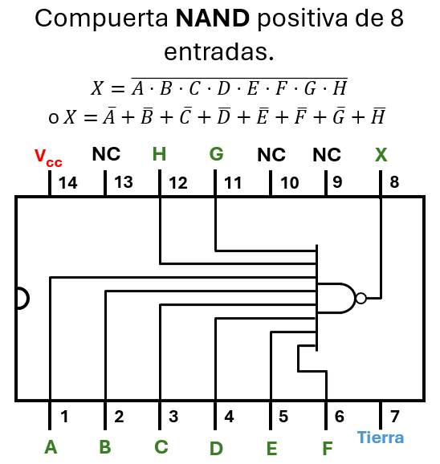
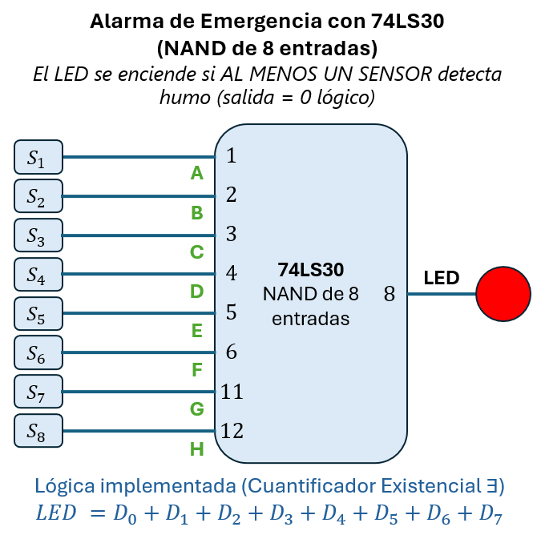
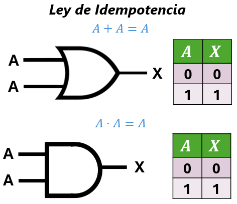
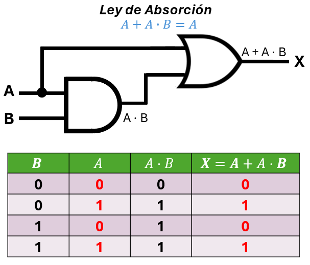

Unidad 3: Fundamentos de Cómputo - Lección 23
🚌 Pensando en Manada: Cuantificadores y Buses de Datos
Hasta ahora, hemos sido los jueces minuciosos de pequeños problemas: un sensor $A$, un botón $B$, una promesa rota. Evaluábamos el mundo un cable a la vez.
Pero el mundo real no funciona así. El procesador de tu computadora no mastica un bit a la vez; procesa 64 bits al mismo tiempo. Un servidor en la nube no evalúa un disco duro, evalúa cientos. Hoy daremos el salto a la Lógica Masiva.
Aprenderemos a transportar información en "manadas" usando Buses de Datos y a tomar decisiones globales instantáneas utilizando el poder absoluto de los Cuantificadores Matemáticos (Universal y Existencial). ¡Es hora de pensar en grande!
Haber dominado el análisis de un solo cable nos ha otorgado la precisión necesaria para juzgar la verdad bit a bit. Sin embargo, en la era de la información masiva, el ingeniero debe dejar de ser un artesano de hilos sueltos para convertirse en un urbanista de señales. Para mover torrentes de datos sin que el sistema colapse en el caos, necesitamos una infraestructura que agrupe y dé sentido al flujo colectivo. Pasemos de la línea individual a la autopista del silicio: el Bus de Datos, la estructura que permite que las máquinas piensen en grande.
1. El Bus de Datos: La Autopista de la Información
Cuando necesitas conectar 8 sensores a un procesador, no dibujas 8 líneas desordenadas en tu plano. Agrupas esos 8 cables paralelos en una sola ruta principal. A esto se le llama Bus de Datos.

Fig. 1: Un Bus de Datos de 8 bits. Observa cómo los 8 cables individuales se agrupan en un solo bloque grueso para simplificar el diagrama. En lugar de nombrar los cables con letras completamente distintas (A, B, C...), usamos la misma letra D con subíndices: \(D_0, D_1, D_2 \dots D_7\), empezando siempre a contar desde el cero.
El problema del Bus es que las compuertas básicas (7408, 7432) que usaste en laboratorios anteriores solo tienen 2 entradas. ¿Cómo le hacemos una pregunta a 8 cables al mismo tiempo sin construir una pirámide gigante de chips? Necesitamos Lógica de Predicados.
Tener los datos agrupados en un Bus es un triunfo de la organización, pero nos plantea un dilema técnico inmediato: nuestras compuertas básicas solo saben escuchar a dos cables a la vez. En un procesador moderno, no podemos darnos el lujo de construir pirámides interminables de chips para responder una pregunta simple sobre un grupo entero de señales. Para interrogar a la multitud de forma elegante y veloz, debemos invocar el lenguaje de la Lógica de Predicados. Pasemos a conocer a los Cuantificadores, las herramientas maestras que nos permiten tomar el pulso a todo el sistema de un solo golpe.
2. Los Cuantificadores: Preguntándole a la Multitud
En matemáticas, cuando quieres evaluar un conjunto grande de variables, usas símbolos llamados Cuantificadores. En hardware, estos símbolos se convierten en compuertas gigantes.
$\forall$ El Inspector Estricto: Cuantificador Universal
Se lee como "Para Todo". Da como resultado $1$ única y exclusivamente si TODOS los elementos del bus son $1$. Si un solo sensor falla ($0$), el resultado global es $0$.
En Hardware: Es una Compuerta AND gigante de 8 entradas. Actúa como un multiplicador en cadena. Recuerda la regla de dominación: basta un solo $0$ para que toda la multiplicación se vuelva $0$.
Ejemplo Cotidiano: "¿Todas las puertas del banco están cerradas con llave?". Solo te vas a dormir ($1$) si la respuesta de TODAS es Sí.
$\exists$ El Detector de Pánico: Cuantificador Existencial
Se lee como "Existe al menos uno". Da como resultado $1$ si por lo menos un elemento del bus es $1$. No le importa si son uno, tres o todos; con uno basta para detonar la alarma.
En Hardware: Es una Compuerta OR gigante de 8 entradas. Actúa como una suma en cadena. Recuerda la regla: $0 + 0 + 1 + 0 = 1$.
Ejemplo Cotidiano: "¿Hay humo en alguna habitación?". No necesitas que se queme todo el edificio; si un solo sensor detecta humo ($1$), suenas la alarma general.
🍎 Rincón del Docente: El "Bus de Estudiantes"
Pasar de evaluar 1 cable a evaluar un Bus de 8 cables asusta a cualquier estudiante de secundaria. Las fórmulas gigantes como \(D_0 \cdot D_1 \dots D_7\) parecen incomprensibles. Como docente, tu misión es demostrarles que ellos procesan Cuantificadores Lógicos todos los días en el salón de clases de forma automática.
La Analogía del Examen y la Chicharra
Diles a tus alumnos que el salón de clases (de 8 estudiantes) es un Bus de Datos de 8 cables. Cada alumno es un bit. Si el alumno levantó la mano, vale 1; si la bajó, vale 0.
- El Inspector Estricto (La Compuerta AND Gigante - \(\forall\)):
Diles: "La regla es: Solo salimos al recreo (1) si TODOS ustedes terminaron el examen (levantaron la mano)".
La lección: Diles que miren alrededor. Si ven 7 manos arriba y una sola mano abajo (un 0), nadie sale al recreo. Acaban de experimentar en carne propia cómo funciona una compuerta AND de 8 entradas: el cero domina a la multitud. - El Detector de Pánico (La Compuerta OR Gigante - \(\exists\)):
Diles: "La regla es: Suena la chicharra de evacuación (1) si ALGUIEN huele humo".
La lección: Pregúntales si necesitan que los 8 huelan humo para correr. ¡No! Con que un solo alumno levante la mano gritando fuego (un 1), se activa la sirena para todos. Acaban de experimentar una compuerta OR de 8 entradas: el uno domina a la multitud.
✨ El Salto Físico al Hardware
Una vez que entiendan la regla del salón, muéstrales las fórmulas con las "D" multiplicándose o sumándose. Ya no verán matemáticas; verán a 8 compañeros decidiendo si salen al recreo o evacúan el colegio. ¡El álgebra de Boole se volvió una experiencia social!
Dominar la lógica del 'Para Todo' y del 'Existe' nos otorga el poder de un juez supremo sobre el Bus. Sin embargo, en la ferretería electrónica, la perfección matemática a menudo choca con la eficiencia de fabricación. Construir una compuerta AND pura de 8 entradas es un reto físico que genera calor y lentitud. Por ello, la industria recurre a un ingenioso truco de mutación basado en lo que aprendiste en la Unidad 2. Pasemos de la pizarra al silicio industrial para conocer al Chip 74LS30, el componente donde los Cuantificadores y las Leyes de De Morgan se funden en una sola pieza de ingeniería.
3. De Morgan a Escala Industrial (El Chip 7430)
¿Qué pasa cuando la lógica matemática de los Cuantificadores choca con la ingeniería del mundo real? Fabricar compuertas AND gigantes de 8 entradas es costoso e ineficiente en silicio. La industria prefiere fabricar compuertas NAND.
Para solucionar esto, los ingenieros utilizan la conexión mágica entre los Cuantificadores y las Leyes de De Morgan (Lección 14).
Lógica Matemática Pura
En filosofía matemática, negar que "Todos son perfectos" es exactamente lo mismo que afirmar que "Existe al menos un defectuoso".
Traducción al Hardware (De Morgan)
En electrónica, negar un cuantificador Universal (AND gigante) nos da una compuerta NAND. Por De Morgan, sabemos que esto equivale a un cuantificador Existencial (OR) de señales negadas.
💾 El Héroe Real: Chip 74LS30 (NAND de 8 Entradas)
En lugar de construir una OR de 8 entradas combinando docenas de compuertas, los ingenieros compran el chip 74LS30. Es una sola compuerta NAND gigantesca de 14 pines que procesa un Bus de Datos entero de un solo golpe. Es De Morgan trabajando a escala industrial.

Fig. 2: Diagrama de conexión (Pinout) del 74LS30. Observa que las 8 entradas están distribuidas alrededor del chip, la salida está en el pin 8, y hay tres pines marcados como NC (No Connect) en los que no debes enchufar absolutamente nada.
💡 Ejemplo Práctico: Alarma de Emergencia con 74LS30
Imagina que tienes 8 sensores de humo en un edificio. Cada sensor entrega un nivel lógico 1 (alto) cuando no detecta humo (estado seguro). Quieres que se encienda una alarma (LED rojo) si al menos un sensor detecta humo (es decir, su salida pasa a 0).
Usando el chip 74LS30, conectamos cada sensor a una de las 8 entradas del chip. La salida del chip será:
Si todos los sensores están en 1 (tranquilidad), el producto es 1 y la salida es 0 (LED apagado). Si algún sensor se pone a 0 (humo), el producto se vuelve 0 y la salida se pone a 1, encendiendo el LED. ¡Acabamos de construir un detector de pánico masivo con un solo chip!

Fig. 3: Alarma de emergencia con 74LS30. La lógica implementa el cuantificador existencial de las señales negadas: \(LED = \overline{D_0 \cdot D_1 \cdots D_7} = \overline{D_0} + \overline{D_1} + \cdots + \overline{D_7}\). Es decir, el LED se enciende si existe al menos un sensor en 0 (humo).
Pregunta para reflexionar:
¿Qué pasaría si en lugar de conectar los sensores directamente, los conectaras a través de inversores (NOT)? ¿Qué tipo de cuantificador estarías implementando?
Esta capacidad de procesar 8 señales de un solo golpe es impresionante, pero la verdadera magia ocurre cuando escalamos esta idea a millones de datos. ¿Sabías que esta 'lógica de manada' es el secreto detrás de cómo tu celular reconoce tu rostro?
👁️ ¿Cómo una computadora "ve" el mundo?
Cuando una Inteligencia Artificial mira una foto, no ve caras o paisajes. Lo que realmente "ve" es un Bus de Datos masivo: una matriz de millones de números (píxeles). Procesar esto bit a bit es imposible; por eso la IA usa la Lógica de Manada.
🧩 Red Neuronal Convolucional (CNN)
Es la arquitectura que permite a los Tesla o a FaceID funcionar. Usa "lupas matemáticas" que recorren la foto buscando patrones. Pero buscar no es suficiente; hay que resumir.
📊 Max-Pooling: El Cuantificador Existencial en acción
Para reducir el tamaño de la imagen, la IA usa Max-Pooling. Es exactamente lo mismo que tu cuantificador existencial (\(\exists\)) o tu compuerta OR gigante:
Si ∃ al menos un 1 → SALIDA 1
Si ∃ un patrón fuerte → CONSERVA EL VALOR
🔑 La clave: Si la IA encuentra al menos un borde, el Max-Pooling descarta el resto de los datos aburridos y se queda solo con el éxito. Esto reduce la carga de datos a la mitad, permitiendo que la IA "piense" en tiempo real.
📐 Profundización para Grado 10°:
Matemáticamente, el Max-Pooling otorga invarianza a la traslación. Al aplicar un cuantificador existencial sobre una región, a la red no le importa la posición exacta del rasgo dentro de la ventana, solo que exista. Esto es lo que permite que tu celular te reconozca aunque tengas la cara un poco inclinada.
🚀 El gran panorama: Una GPU moderna contiene millones de compuertas trabajando en paralelo para aplicar estos cuantificadores. Lo que hoy haces con un chip 74LS30, una IA lo hace billones de veces por segundo para poder "ver".
Contar con el poder del chip 7430 es como tener un telescopio capaz de ver a miles de kilómetros: nos permite procesar buses enteros en un suspiro. Pero un arquitecto de computadores sabe que la fuerza bruta es el último recurso del diseñador descuidado. Antes de entregarle el Bus a la máquina, es nuestro deber auditar la autopista en busca de redundancias que solo restan velocidad y espacio. Pasemos a rescatar las leyes fundamentales de Boole para realizar una Optimización de Buses, donde los axiomas actúan como las tijeras de precisión que limpian el camino de la información.
4. Optimizando el Bus: El Regreso de los Axiomas Perdidos
Imagina que estás diseñando la placa base de un servidor. Tienes un Bus de Datos con muchas señales y vas a enviarlas a un chip 7430 para evaluarlas. Pero, ¡espera! Un buen ingeniero nunca conecta cables a ciegas. Antes de procesar el Bus, revisa si hay cables redundantes aplicando dos teoremas del Álgebra de Boole que teníamos guardados bajo la manga.
✂️ Axioma 1: Idempotencia (\(A \cdot A = A\))
El Problema del Bus: Por un error de diseño de un compañero, el sensor de temperatura (\(T\)) está enviando su señal duplicada por los cables \(D_2\) y \(D_3\) del Bus. Quieres usar un Cuantificador Universal (\(\forall\)) para saber si todo el sistema está bien.

Fig. 4: Ley de Idempotencia. Conectar la misma señal a ambas patas de una compuerta no altera la información, solo desperdicia pines.
La Intervención del Ingeniero: Como ves en la figura, no necesitas comprar un chip con pines extra para procesar dos veces la misma señal. Por la ley de Idempotencia, una señal multiplicada (o sumada) consigo misma no aporta información nueva. Simplemente cortas el cable \(D_3\), lo ignoras, y envías el resto al chip. Has ahorrado recursos físicos usando matemáticas.
🧽 Axioma 2: Absorción (\(A + A \cdot B = A\))
El Problema del Bus: Tienes un Bus de alarmas entrando a un Cuantificador Existencial (\(\exists\) / Compuerta OR). El cable \(D_0\) trae la "Alarma General de Incendio" (\(A\)). El cable \(D_1\) trae la "Alarma de Incendio en Cocina", que lógicamente solo se activa si hay un incendio general Y humo en la cocina (\(A \cdot C\)).

Fig. 5: Ley de Absorción. Como ves en la tabla, la salida X es idéntica a la entrada A. ¡La compuerta AND y la señal B no tienen ningún efecto final!
La Intervención del Ingeniero: Si lo que quieres saber es "¿Existe alguna alarma encendida?", la señal del cable \(D_1\) (\(A \cdot C\)) es completamente inútil para la toma de decisión final. Si la cocina se incendia, la Alarma General (\(A\)) ya estará en \(1\), disparando la compuerta OR.
Por el Teorema de Absorción, el término más simple (\(A\)) "absorbe" al término complejo que lo contiene (\(A \cdot C\)). Puedes desconectar el cable \(D_1\) del cuantificador. El hardware que calcula \(A \cdot C\) estaba gastando energía para nada frente a esta pregunta global.
🧹 Optimización de buses con absorción:
Cuando un bus de datos contiene una señal redundante (como \(A \cdot C\)) que ya está implícita en otra señal más general (\(A\)), el teorema de absorción nos permite eliminar ese cable innecesario antes de que la señal llegue al cuantificador. Esto reduce el número de entradas físicas que debe procesar el chip, ahorrando componentes y simplificando el diseño de la placa. Es un ejemplo perfecto de cómo las reglas algebraicas se convierten en ahorro de hardware real.
Los Cuantificadores Lógicos te permiten tomar decisiones sobre cantidades masivas de datos. Los Axiomas de Boole te permiten "limpiar" esa masa de datos antes de procesarla. ¡Esta es la esencia de la Arquitectura de Computadores!
🎧 Podcast: Lógica de Manada y el Chip 7430
En este episodio analizamos cómo la industria de microchips aplica las Leyes de De Morgan a escala masiva. Exploramos la anatomía del chip 74LS30 (NAND de 8 entradas), el fenómeno del "Fan-in" y cómo los axiomas de Idempotencia y Absorción actúan como tijeras matemáticas para limpiar buses de datos redundantes antes de que lleguen al procesador.
⏱️ 12:22 min | 🏗️ Enfoque: Arquitectura de Buses y Eficiencia Térmica
🪪 Tarjeta de Identidad del Prompt Ético
Usa esta guía para construir prompts que te ayuden a generar ejercicios de optimización de Buses de Datos usando axiomas lógicos.
📝 Mi Fórmula de 4 Pasos:
💡 Ejemplo de Prompt:
"Comprendí que en el diseño de Buses de Datos, el cuantificador Universal ($\forall$) actúa como una compuerta AND gigante y el Existencial ($\exists$) como una OR gigante. También entendí que podemos usar los axiomas de Idempotencia y Absorción para eliminar cables redundantes antes de procesarlos. Quiero saber: si tengo un Bus de 8 bits para un sistema de diagnóstico automotriz, ¿puedes diseñarme un ejercicio donde 3 de esas señales sean lógicamente absorbidas por otra señal principal (ej. Falla General de Motor) usando la regla $A + A \cdot B = A$? Explícame la solución como si fuera a enseñárselo a estudiantes de mecatrónica de grado 11°. Incluye un error matemático común que los alumnos cometen al intentar aplicar la absorción."
📋 Bitácora de Innovación (Mi Cuaderno)
Responde en tu cuaderno físico (o aquí) las siguientes reflexiones:
- El traductor de hardware: Si tuvieras que explicarle a un niño de 10 años qué es un "Bus de Datos" usando una analogía de la ciudad (calles, carros, personas), ¿cómo lo harías?
- Hackeando el sistema: Imagina que necesitas construir un Cuantificador Existencial ($\exists$, una OR de 8 entradas) para saber si "Al menos una ventana está abierta". Pero el proveedor solo te envió chips 7430 (NAND de 8 entradas). Usando la Ley de De Morgan que vimos hoy, ¿cómo adaptarías físicamente los sensores de las ventanas para que el chip NAND te dé la respuesta correcta?
- El "Borrador" Financiero: Demuestra algebraicamente por qué $X + X \cdot Y \cdot Z + X \cdot W = X$ (Ley de Absorción Múltiple). ¿Cuántos cables/chips ahorraste en el Bus de Datos al hacer esta simplificación?
🚀 Próximamente...
Has domado la información masiva. Entiendes los Buses de Datos, sabes cómo evaluarlos con Cuantificadores Lógicos y cómo recortar cables inútiles usando los Axiomas de Absorción e Idempotencia.
Pero hasta hoy, hemos aceptado estas reglas del Álgebra de Boole como si fueran mandamientos caídos del cielo. ¿Por qué $A + \bar{A}$ tiene que ser 1? ¿Por qué el opuesto de una señal solo puede ser uno y no dos?
En la próxima lección (Lección 24), dejaremos de ser usuarios de las matemáticas para convertirnos en Creadores. Nos sumergiremos en el Álgebra Formal y la Unicidad, donde usaremos los postulados básicos para demostrar matemáticamente, paso a paso, por qué el universo digital funciona de la manera en que lo hace. ¡El fin de las tablas de verdad ha llegado!
🧠 Cerebro de Silicio: Cuantificadores y la Visión de la IA
Para Grado 7°: Resumiendo el mundo
Una foto tiene millones de píxeles. Para que la IA no se bloquee con tanta info, usa el cuantificador Existencial ($\exists$). Divide la foto en cuadritos y pregunta: "¿Existe algún borde brillante aquí?". Si la respuesta es SÍ, resume todo ese cuadro en un solo bit. ¡La IA 'limpia' la realidad para ver solo lo importante!
Para Grado 10°: Max-Pooling y CNNs
En las Redes Neuronales Convolucionales, la operación Max-Pooling es idéntica a una compuerta OR gigante (Cuantificador Existencial). Al tomar un bus de datos espaciales y dejar pasar solo el valor máximo, la IA logra reconocer un objeto aunque esté movido o rotado. Es lógica de manada aplicada a la visión artificial.
🚀 Dato de Futuro: Sin los cuantificadores lógicos, internet colapsaría. Si la IA detecta que "Existe al menos un error" en un bus de datos, rechaza el paquete entero para proteger tu información.
Lógica de Manada: ¿Cómo piensa un Estadio?
Elevamos la arquitectura de buses hacia el comportamiento de las masas. Analizamos la "Ola" en un estadio como un cuantificador universal y el inicio de un disturbio como uno existencial. Descubrimos por qué la IA prefiere usar "mares de NANDs" para comprimir fotos satelitales y cómo la elegancia matemática ahorra billones de dólares en silicio.
⏱️ 18:52 min | 🌐 Recomendado: Futuros Desarrolladores de IA de Visión